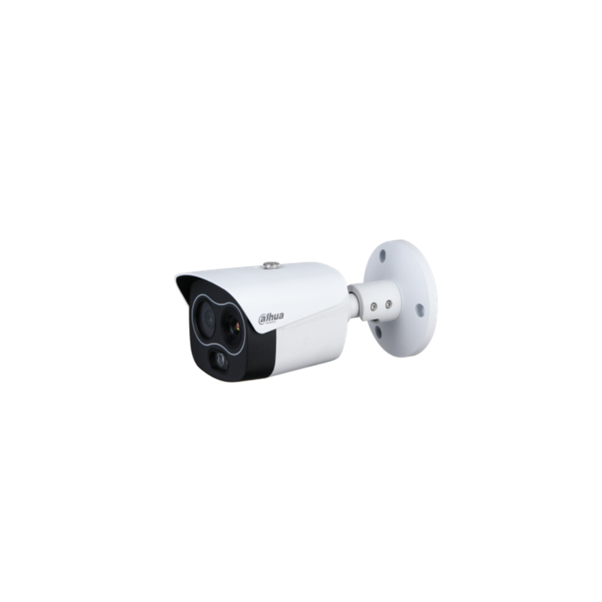
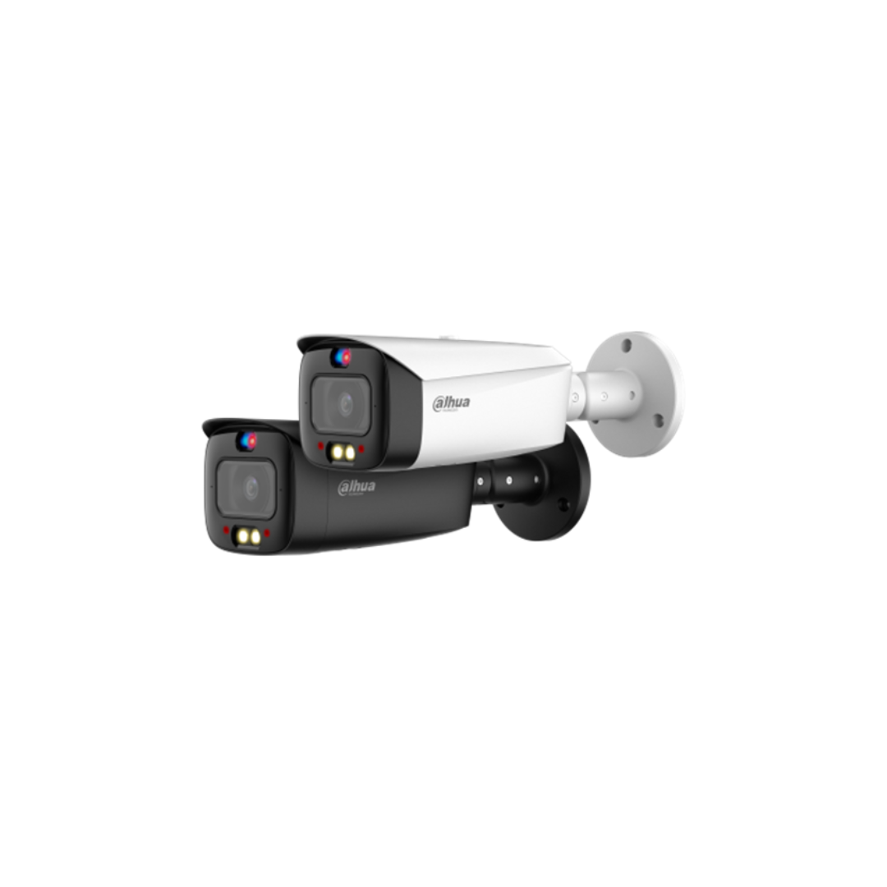
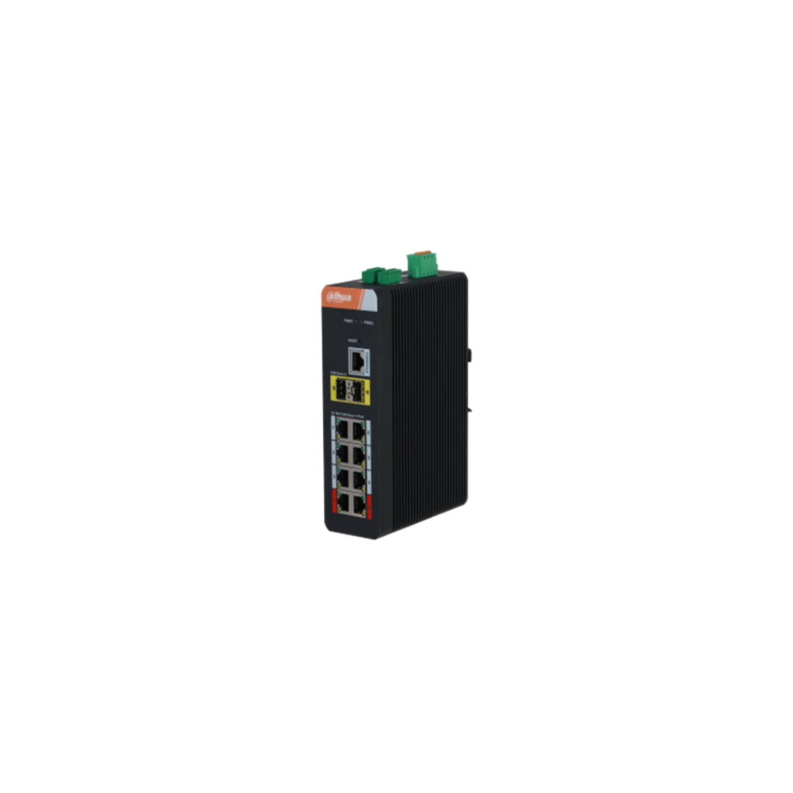
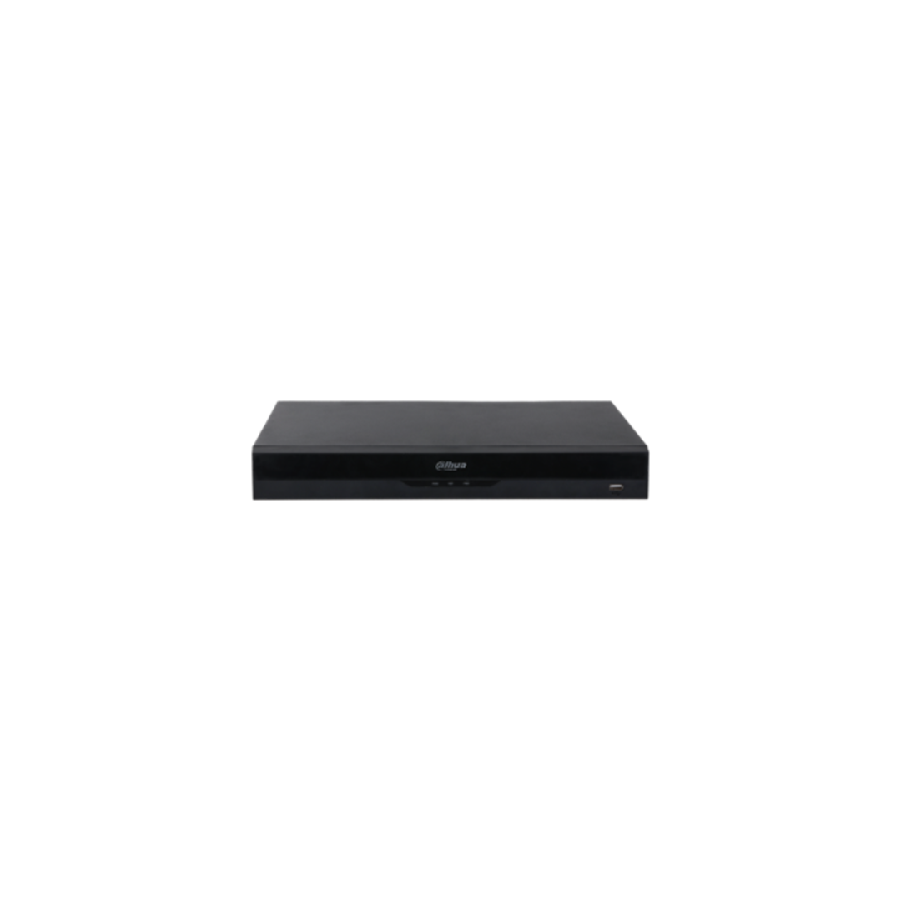

Perimeter Protection
Challenge:


Ancaman keamanan perimeter meningkat, terutama di area vital seperti fasilitas pemerintahan, industri, dan area terlarang. Pengamanan standar sering kali tidak cukup untuk mendeteksi atau menanggulangi pelanggaran akses yang canggih.
Kurangnya pengawasan 24/7 menyebabkan pencurian, kerusakan properti, dan pelanggaran yang mengakibatkan kerugian
Petugas keamanan yang berada jauh atau terbatas secara fisik memungkinkan ancaman meningkat sehingga menghambat penanganan situasi secara cepat
Tidak adanya bukti tercatat mengenai penyusupan menyebabkan kendala untuk mengajukan klaim asuransi, karena tidak ada catatan yang mendukungnya
Value:


Perimeter Solution hadir sebagai solusi komprehensif dengan teknologi canggih untuk keamanan perimeter. Dengan sistem sensor gerak, kamera pengawas pintar, dan sistem deteksi dini otomatis, perimeter Anda terjaga secara real-time, memberikan perlindungan maksimal dari setiap potensi ancaman.
Cakupan keamanan 24/7
Perekaman video 24/7 yang berkelanjutan memberikan cakupan yang terperinci dan menyeluruh. Sistem ini juga memiliki akurasi 99% dalam mendeteksi penyusup, sehingga meminimalkan alarm palsu
Respon tanggap terhadap penyusupan
Saat kamera AI mendeteksi adanya penyusupan, ia memicu tindakan pencegahan aktif lokal secara real-time dan memberi tahu petugas keamanan untuk mengambil tindakan yang tepat
Bukti yang Cukup untuk Investigasi
Rekaman video HD dari penyusupan yang terdeteksi sangat penting untuk investigasi lebih lanjut dan klaim asuransi
Product List:

Thermal Network Mini Hybrid Bullet Camera

Thermal Network Mini Hybrid Bullet Camera
TPC-BF1241-S8
Thermal Network Mini Hybrid Bullet Camera
- Vanadium oxide uncooled focal plane detector.
- 4Megapixel progressive scan CMOS
- AI functions: heat detection, tripwire, human/vehicle classification, smoking detection, and call detection
- Built-in white light and audio alarm
- Remote auxiliary management
- Dual image fusion (visible and thermal channels)
- Wide input voltage 12 VDC ± 20%, and PoE
- IP67 rated

4MP Smart Dual Light Active Deterrence Fixed-focal Bullet WizSense Network Camera
* The parameters and datasheets below can only be applied to 3449-PV-S5 series.
IPC-HFW3449T1-AS-PV
4MP Smart Dual Light Active Deterrence Fixed-focal Bullet WizSense Network Camera
* The parameters and datasheets below can only be applied to 3449-PV-S5 series.
- 4-MP 1/2.7" CMOS image sensor, low luminance, and high definition image.
- Outputs max. 4 MP (2688 × 1520)@25/30 fps
- H.265 codec, high compression rate, ultra-low bit rate
- Built-in warm light and IR LED; the max. IR illumination distance is 30 m and warm light distance is 30 m.
- ROI, SMART H.264+/H.265+, AI H.264/H.265, flexible coding, applicable to various bandwidth and storage environments.
- Rotation mode, WDR, 3D NR, HLC, BLC, digital watermarking, applicable to various monitoring scenes.
- Intelligent monitoring: Intrusion, tripwire (the two function support the classification and accurate detection of vehicle and human)
- Abnormality detection: Motion detection, privacy masking, scene changing, audio detection, no SD card, SD card full, SD card error, network disconnection, IP conflict, illegal access, and voltage detection.
- Alarm: 1 in, 1 out; audio: 1 in, 1 out; supports max. 256 G Micro SD card; built-in dual Mic; 1-ch speaker; support two-way talk.
- 12 VDC/PoE power supply
- IP67 protection.
- Sound and light alarm (red and blue lights)
- SMD 4.0.
- Supports AI SSA and one-tap arming and disarming
- SMD area can be set in warm light areas that support triggering alarms

10-Port Managed Industrial Gigabit Switch with 8-Port PoE (Managed)
IS4210-8GT-120
10-Port Managed Industrial Gigabit Switch with 8-Port PoE (Managed)
- All-gigabit port design.
- Supports IEEE802.3af, IEEE802.3at, Hi-PoE and IEEE802.3bt (red port) standards.
- 250 m long-distance PoE transmission (10 Mbps).
- PoE Watchdog.
- Supports STP, RSTP, and ERPS
- IEEE802.1Q-based VLAN configuration
- Manual link aggregation and static LACP.
- Desktop mount and DIN-rail mount

16CH 1U 2HDDs WizSense Network Video Recorder
NVR4216-EI
16CH 1U 2HDDs WizSense Network Video Recorder
- Smart H.265+/H.265/Smart H.264+/H.264/MJPEG decoding format
- Access, storage or forwarding at 256 Mbps (180 Mbps when AI function enabled)
- Max. decoding capability: 16 × 1080p@30 fps. Supports adaptive decoding
- AI by NVR: 1-channel face detection and recognition; 2-channel perimeter protection; up to 10 face databases and 20,000 face images; 4-channel SMD Plus
- AI by Camera: Face detection and recognition, perimeter protection; SMD Plus; people counting; stereo analysis; heat map
- Connected to the third-party network cameras
- Security baseline 2.3


.png)


.png)


 Parking Camera with audio function.png)
 Dual-Sensor Parking Camera with audio function.png)